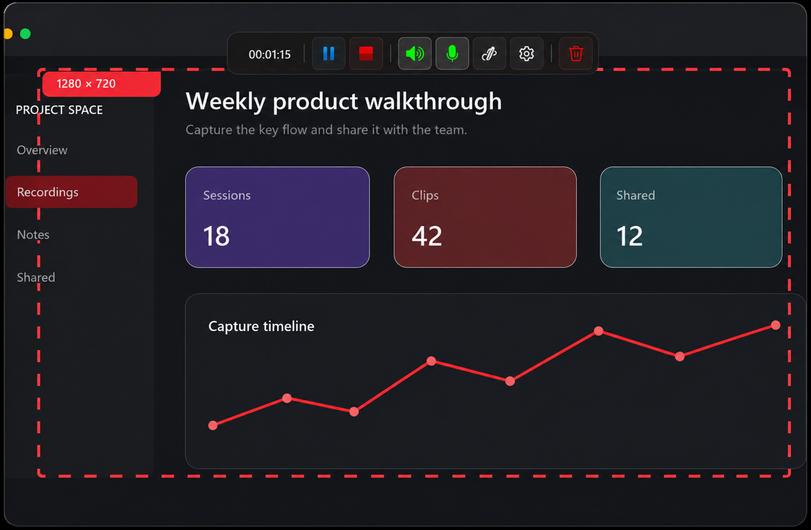
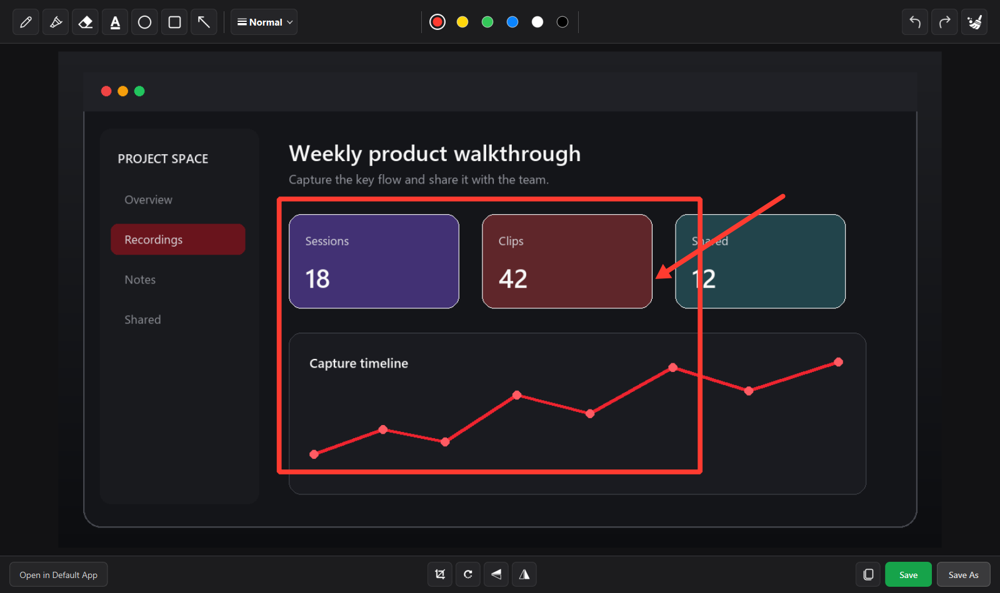
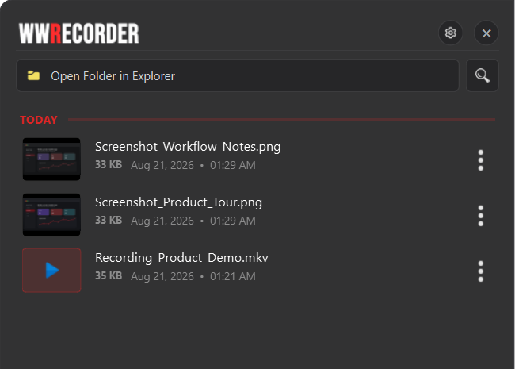
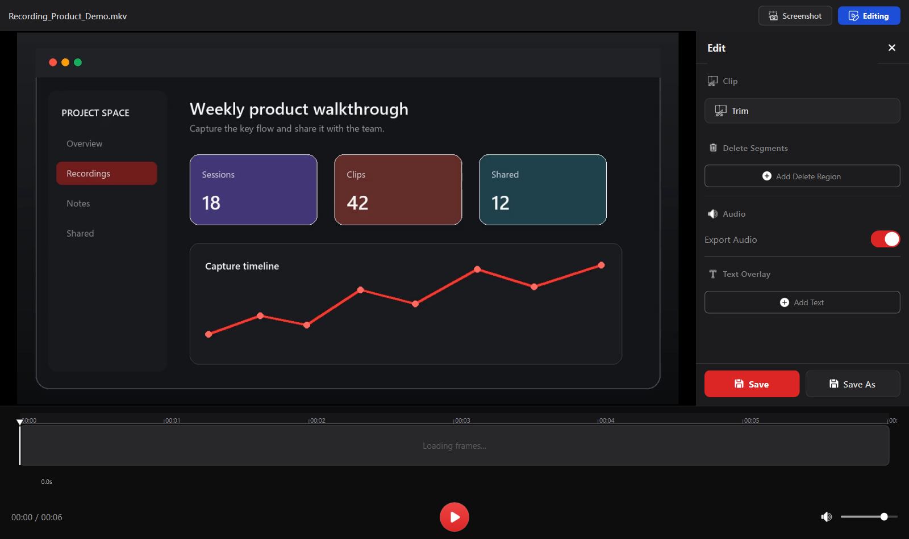

Choose WWRecorder when you need to…
- Record a lesson, walkthrough, demo, or bug report
- Capture system sound, microphone audio, or both
- Draw attention to something while recording
- Trim mistakes and remove a few unwanted sections
Windows 10 / 11 · Free · Open source
World Wide Recorder
Record a chosen area, take screenshots, annotate while you explain, and make simple edits without uploading your media.Made for walkthroughs, lessons, bug reports, and quick demos.
A complete local workflow
These are real WWRecorder screens. Follow the workflow from selecting an area to organizing and editing the result.
Screen recording
Choose a region on any connected screen, include the cursor, and record system sound, microphone audio, or both. The floating pill keeps pause, audio, annotation and stop controls close while you work.

Live and screenshot annotation
Draw over the live desktop during a recording, or open a screenshot in the image editor. Use pencil, highlighter, arrows, shapes and text, with undo, redo and eraser controls.

Recent Files
The sidebar shows recent recordings and screenshots with previews. Drag a file directly into another app, or use the vertical ⋮ menu for the available file actions.

Video player and editor
Review the recording, save a frame, or open Edit for the changes people need most before sharing.

A focused Windows tool
WWRecorder is designed for people who need to capture and explain something quickly—not people building a multi-track film project.
Start recording or take a screenshot while another app is focused.
Copy saved screenshots and recordings without hunting through folders.
Choose where media is stored and open that location from Recent Files.
Failed finalization keeps recent work media instead of silently deleting the only playable copy.
Under the hood
Pixels, audio, timing, and temporary media each have a clear owner. That matters when the computer is busy, an audio device changes, or final processing fails.
Open the engineering deep diveMissed scheduler slots are counted instead of filled with stale frames, then the final video is normalized to a stable 30 FPS.
wall clock → setpts → CFR 30System sound and microphone capture use short WASAPI reads, follow default-device changes, and mix locally.
WASAPI · 48 kHz · OpusWork media is removed only after a non-empty final MKV is proven, so a processing failure does not erase the only copy.
saved · discarded · recoverableMORE BY SUMIT
Explore more tools and extensions built to make your digital life easier.
A lightweight browser extension to manage text and links within instant reach and save daily browsing time.
Extended version of QuickClip with powerful multimedia capabilities, tagging, and structured export.
Desktop tool to convert speech to text using AI with automatic punctuation and capitalization.
Display your real-time keystrokes and mouse clicks on screen during video recordings and presentations.
WWRecorder is free and open source. Use Microsoft Store for the simplest installation and updates, or choose the standalone EXE.